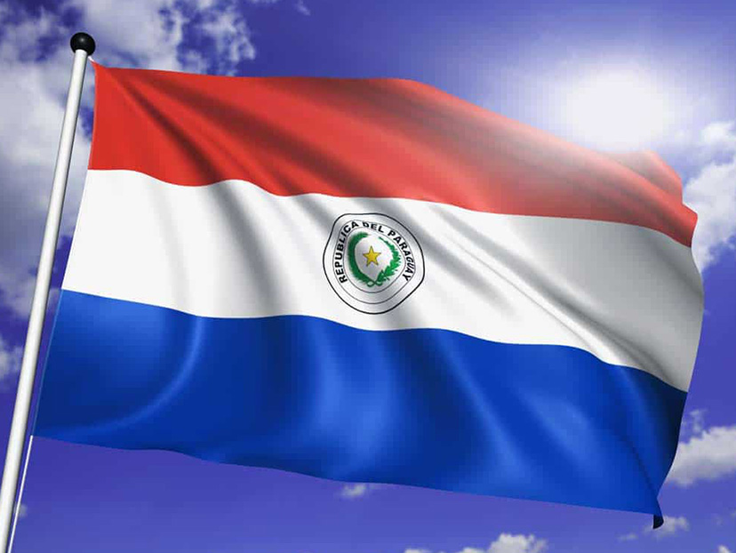
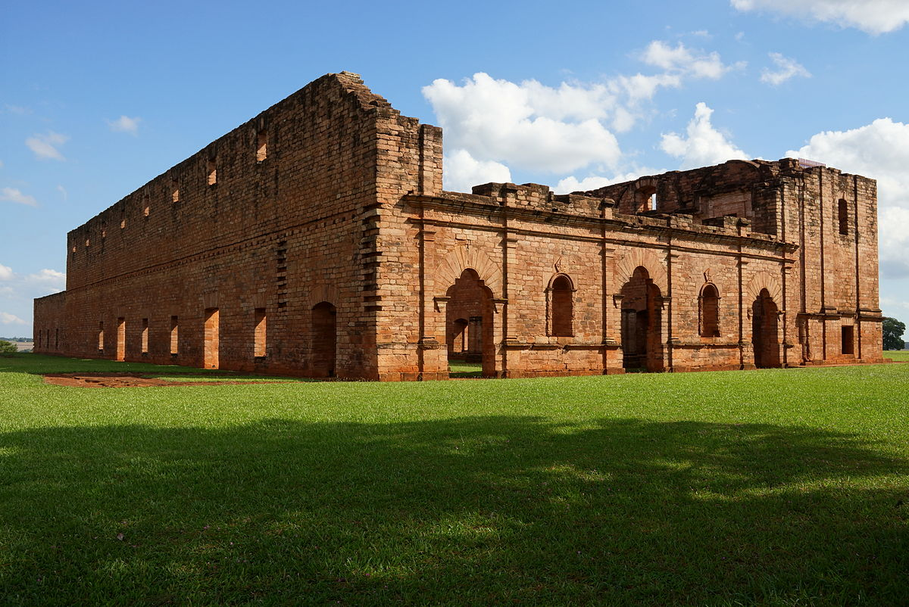
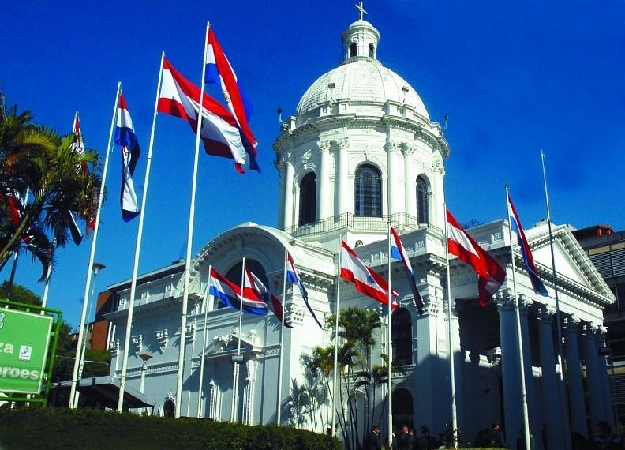
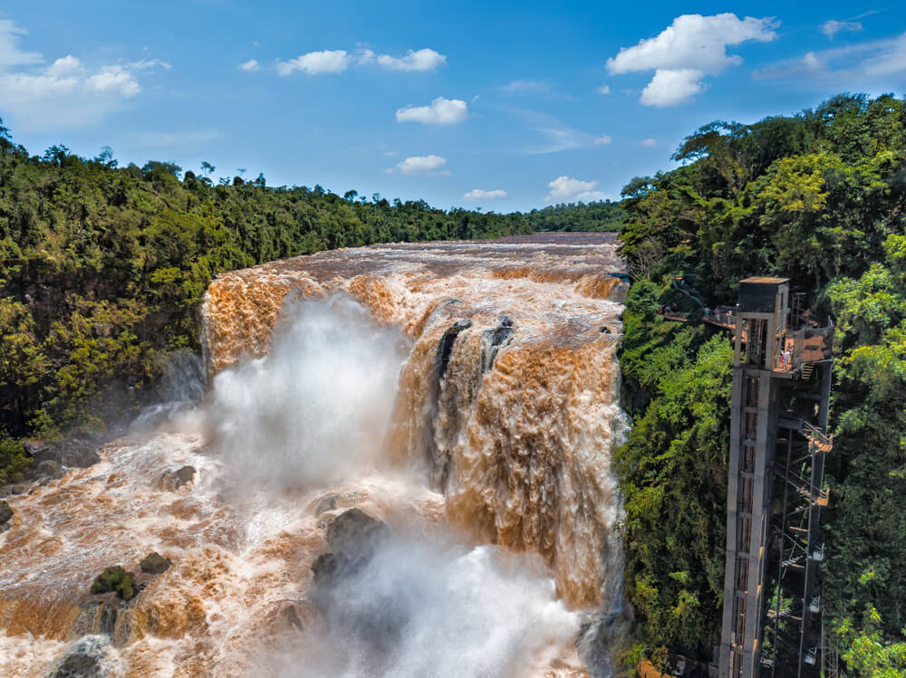

Introduccion
Paraguay es un Estado nacional cuyo nombre oficial es República del Paraguay. Se encuentra en América del Sur, y limita con Argentina al sur, con Bolivia al norte y con Brasil al este. Su capital es la ciudad de Asunción. Se trata del quinto país más pequeño y el cuarto menos poblado de América del Sur.

Cultura
Paraguay es una nación multicultural y bilingüe, y posee dos idiomas oficiales: el español, heredado de la colonia española durante la conquista y hablado por el resto de los países de América del Sur salvo Brasil; y el guaraní, lengua indígena hablada y escrita por el 87 % de los habitantes del Paraguay, que cuenta con una Academia de la Lengua Guaraní.
En la música paraguaya predominan la guitarra y el arpa, sobre todo en el folclore. Los ritmos típicos folclóricos son la canción paraguaya (polca) y la guarania.
La gastronomía también presenta abundancia de elementos autóctonos, como la sopa paraguaya(que no es líquida a pesar de que se llama sopa) elaborada con maíz, queso y cebolla, el tereré o mate frío, que es la bebida nacional del país, y la chipá(hecha de almidón de mandioca y queso).
Las artes en Paraguay florecieron durante del siglo XX, especialmente en el cine, gracias a numerosas coproducciones con Argentina y Brasil. En materia literaria, los mayores referentes de Paraguay son Augusto Roa Bastos, Josefina Pla, Rubén Bareiro Saguier y Raúl Amaral, entre otros.
La religión predominante de Paraguay es la católica, y la Iglesia Católica tiene una influencia significativa en la vida social del país. También se profesa, aunque minoritariamente, la religión cristiana protestante y diversas religiones relacionadas con los pueblos originarios de la región.
Historia
Se sabe de asentamientos humanos en el Paraguay desde el Neolítico. Sin embargo, al momento de la llegada de los conquistadores europeos en el siglo XV, la tribu predominante en la región eran los avá (guaraníes), cuyo primer encuentro con los invasores fue con el expedicionario portugués Alejo García, quien colaboraba con los españoles, en 1524
La colonia española en Paraguay inició en 1537, cuando sobrevivientes de la primera fallida fundación de Buenos Aires buscaron refugio en la región, fundando lo que sería luego Asunción del Paraguay.
Adoptada en 1842, presenta tres franjas de colores rojo, blanco y azul (de arriba hacia abajo) y un escudo en la franja intermedia: dos ramas de palma y olivo en forma de corona, alrededor de una estrella amarilla. En el reverso, sin embargo, tiene un escudo diferente, que muestra a un león acompañado de un gorro frigio y la inscripción “Paz y Justicia”.
Fue creado en 1820. En el anverso aparece la inscripción “República del Paraguay”, una rama de palma y una de olivo y una estrella amarilla de cinco puntas en el centro. Está representado en la bandera nacional. En el reverso el escudo lleva la inscripción “Paz y Justicia”, un león amarillo de perfil y una pica con un gorro frigio rojo.
Lugares turísticos
- Jesús de Tavarangüé
>
- Parque Nacional Ybycuí
 >
>
- Panteón Nacional de los Héroes y Oratorio a Nuestra Señora Santa María de la Asunción
>
- Saltos del Monday
>